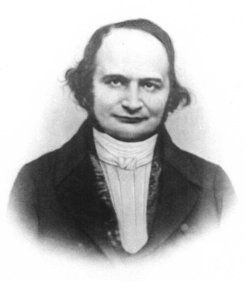

<div class="sidebar">
  <nav class="menu">
    <a href="news.html">[Update & News]</a>
    <a href="notes.html">Physics Notes</a>
    <a href="https://theses.hal.science/tel-04741096">PhD Thesis</a>
    <a href="research.html">Exploratory Projects</a>
    <a href="about_me.html">About Me</a>
  </nav>

  <div class="monthly-theorem">
    <h3>Monthly Highlight</h3>

    

    <a href="https://en.wikipedia.org/wiki/Carl_Gustav_Jacob_Jacobi"
       class="theorem-link">
      <strong>Carl Gustav Jacob Jacobi</strong><br>
      Carl Gustav Jacob Jacobi (1804–1851) was one of the founders of modern analytical mechanics and differential geometry. 
      His work profoundly influenced Hamiltonian mechanics, canonical transformations, and the mathematical formulation of 
      constrained systems. Among his many contributions, the Jacobian matrix, which bears his name, became a fundamental tool 
      for studying coordinate transformations, smooth submanifolds, and differential equations.
    </a>

    <br><br>

    <div class="menu">
      <a href="physicists.html">
        Check the previous highlights!
      </a>
    </div>
  </div>
</div>